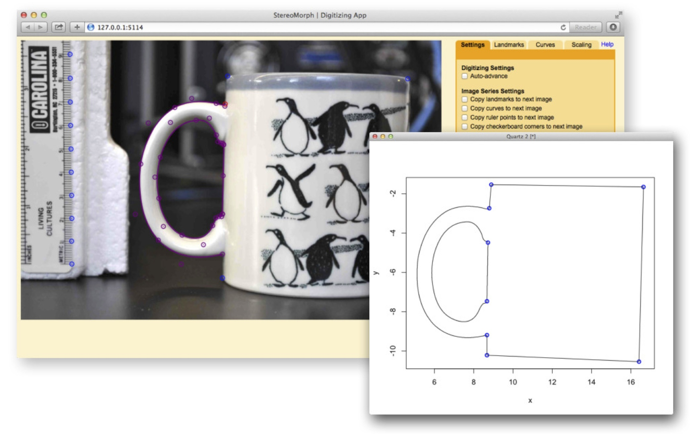

home >
software > digitizing app
StereoMorph Digitizing App
A browser-based digitizing application included in the StereoMorph R package
The StereoMorph R package includes a digitizing application that can be used to collect landmarks and curves from photographs
for 2D morphometrics.
The application runs in a web browser, providing an interactive and easy-to-use interface.
New updates allow users to scale landmarks and curves using manually digitized ruler points or an automatically detected checkerboard pattern directly in the app interface.
Shape and scaling data are saved into a single file for easy referencing.
The app is completely free and compatible across Linux, Mac and Windows.
StereoMorph 2D Tutorial

This tutorial will show you how to collect 2D scaled landmarks and curves
from photographs in StereoMorph using different coffee mugs as an example.
Tutorial:
StereoMorph 2D Tutorial.pdf (0.9 MB)
Project folder:
Mug project.zip (0.3 MB)
Release date: April 2015
StereoMorph version: >= 1.4
Digitizing App Resources